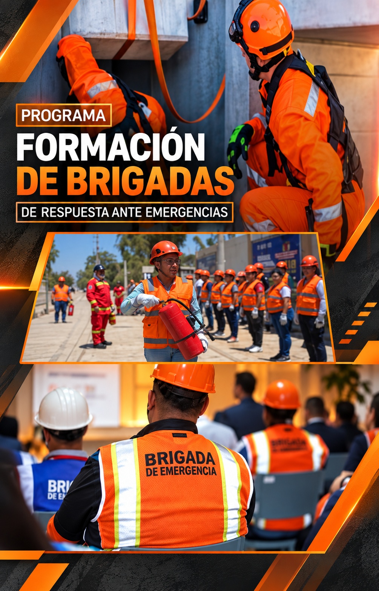

Programa Interno
Elaboración, implementación y actualización de Programas Internos de Protección Civil.
Gestión de riesgos, preparación ante emergencias y fortalecimiento de capacidades para proteger a las personas, instalaciones y operaciones.

En SOS4 SERVICES nos especializamos en la elaboración, implementación y actualización de Programas Internos de Protección Civil y Planes de Contingencia.
Desarrollamos programas de capacitación y adiestramiento orientados a la formación de Unidades Internas de Protección Civil, con enfoque preventivo y multifuncional.
Nuestro objetivo es fortalecer la preparación de las organizaciones ante diferentes escenarios de emergencia, reduciendo riesgos y mejorando la capacidad de respuesta.
Desarrollamos soluciones orientadas a fortalecer la capacidad preventiva y de respuesta de cada organización.
Elaboración, implementación y actualización de Programas Internos de Protección Civil.
Desarrollo de planes para organizar acciones y responsabilidades ante posibles emergencias.
Formación y fortalecimiento de Unidades Internas de Protección Civil.
Formación del personal para actuar de manera organizada ante situaciones de emergencia.
Reconocimiento de condiciones y escenarios que puedan afectar a personas e instalaciones.
Definición de acciones, responsabilidades y protocolos para responder ante contingencias.
La capacitación de las brigadas permite fortalecer la respuesta inicial y la coordinación durante una contingencia.
Preparación para la respuesta inicial ante incendios y uso de equipos disponibles.
Organización y ejecución de procedimientos de evacuación durante una emergencia.
Preparación inicial para la atención de personas lesionadas o afectadas.
Formación para apoyar en acciones de localización, evacuación y rescate.
Contamos con formación avanzada para brigadas internas orientada a la preparación ante incidentes con materiales peligrosos, fortaleciendo una respuesta segura y organizada para reducir riesgos a las personas, instalaciones y medio ambiente.
Desarrollamos soluciones adaptadas a instalaciones educativas y del sector salud.
Implementación de acciones de seguridad que incluyen prevención de riesgos, capacitación ante emergencias y protocolos orientados a mantener un entorno educativo seguro.
Desarrollo de planes de gestión de riesgos, protocolos y capacitación para fortalecer la preparación de instalaciones hospitalarias ante situaciones de contingencia.
Un proceso estructurado para fortalecer la prevención y capacidad de respuesta de la organización.
Reconocimiento de riesgos, amenazas y escenarios potenciales de emergencia.
Desarrollo de procedimientos, responsabilidades y planes de respuesta.
Preparación del personal y formación de brigadas internas.
Aplicación organizada de protocolos ante una situación de emergencia.
Podemos apoyarte con Programas Internos, planes de contingencia, capacitación y formación de brigadas.